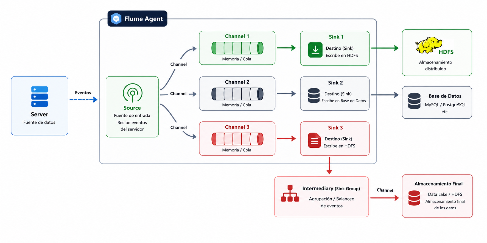

Capítulo 5 - Soporte Teórico y Validación Práctica del Proyecto
Lección 4.Preparación del entorno para la ingesta de datos con Apache Flume.
Trabajo Fin de Grado - Arturo Cabello Rodriguez
Lección 4.Preparación del entorno para la ingesta de datos con Apache Flume.
Trabajo Fin de Grado - Arturo Cabello Rodriguez
Apache Flume es una de las herramientas que forman parte del ecosistema Apache Hadoop y está diseñada para la recolección, agregación y transferencia de grandes volúmenes de datos desde múltiples fuentes hacia sistemas de almacenamiento distribuido como HDFS.
Se trata de una aplicación desarrollada en Java que permite automatizar los procesos de ingesta de datos mediante una arquitectura distribuida, escalable y tolerante a fallos. Aunque su destino habitual es HDFS, Apache Flume también puede enviar información a otros sistemas del ecosistema Hadoop como HBase, Apache Solr o diferentes sistemas de almacenamiento compatibles.
El funcionamiento de Flume se basa en un flujo de eventos compuesto por tres elementos principales que trabajan conjuntamente para transportar la información desde el origen hasta su destino final.

Figura 17. Esquema general de funcionamiento de Apache Flume.
Representa el punto de entrada de la información.
Almacén temporal que conecta Source y Sink.
Destino final de los datos.
Para utilizar Apache Flume es necesario ejecutar un Agente Flume, un proceso Java encargado de coordinar el funcionamiento de los componentes Source, Channel y Sink.
Durante la ejecución, la Source detecta nuevos datos y genera eventos que son almacenados temporalmente en el Channel. Posteriormente, el Sink recupera dichos eventos y los escribe automáticamente en el sistema de almacenamiento configurado.
Aplicación / Archivo
│
▼
Source
│
▼
Channel
│
▼
Sink
│
▼
HDFS
Una instalación completa de Apache Flume puede estar formada por múltiples agentes distribuidos dentro de una red. Cada agente ejecuta uno o varios componentes Source, Channel y Sink, permitiendo construir arquitecturas de ingesta altamente escalables.
Los agentes situados en los extremos de la infraestructura recopilan la información desde diferentes fuentes, mientras que otros agentes intermedios pueden agregar, transformar y reenviar los eventos hasta su almacenamiento definitivo en HDFS.
En la infraestructura desarrollada para este proyecto, Apache Flume será el encargado de automatizar la transferencia del conjunto de datos TABLA_ACCIDENTES_24.csv desde el sistema de archivos local hasta el sistema distribuido HDFS.
El agente Flume se ejecutará sobre el contenedor NameNode, donde supervisará continuamente un directorio compartido. Cada vez que aparezca un nuevo fichero, éste será enviado automáticamente al clúster Hadoop para su posterior procesamiento mediante Hadoop Streaming, MapReduce y Apache Hive.
Apache Flume constituye una herramienta fundamental dentro del ecosistema Hadoop para la automatización de la ingesta de datos. Gracias a su modelo basado en agentes, Source, Channel y Sink, permite construir flujos de transferencia robustos, escalables y completamente automatizados, facilitando la incorporación continua de información hacia HDFS y sirviendo como punto de partida para el procesamiento distribuido de grandes volúmenes de datos.